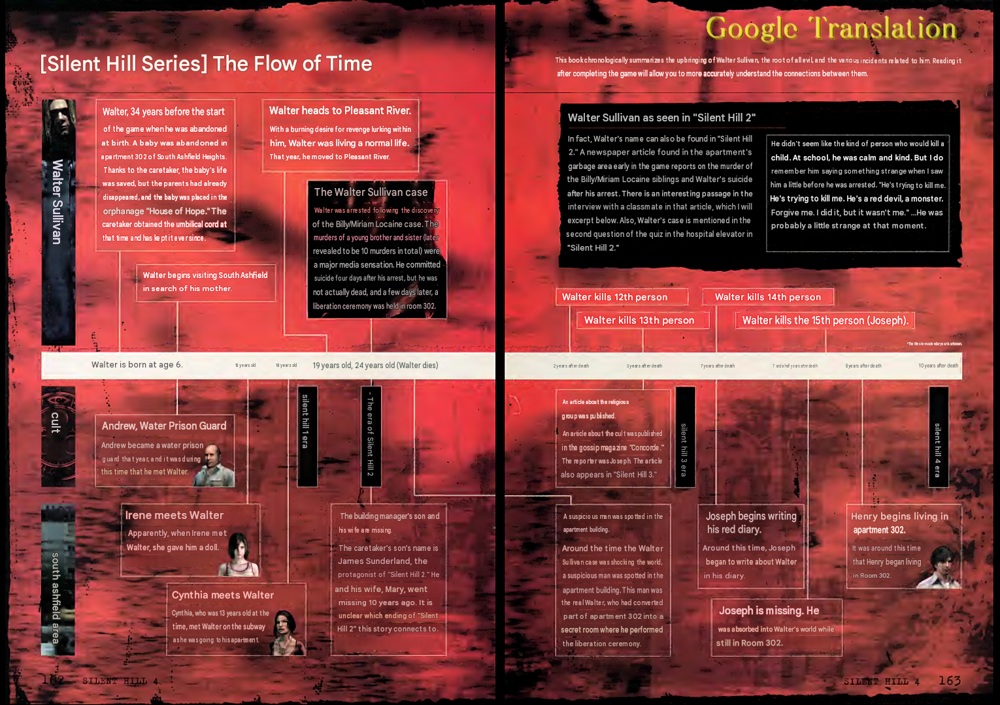
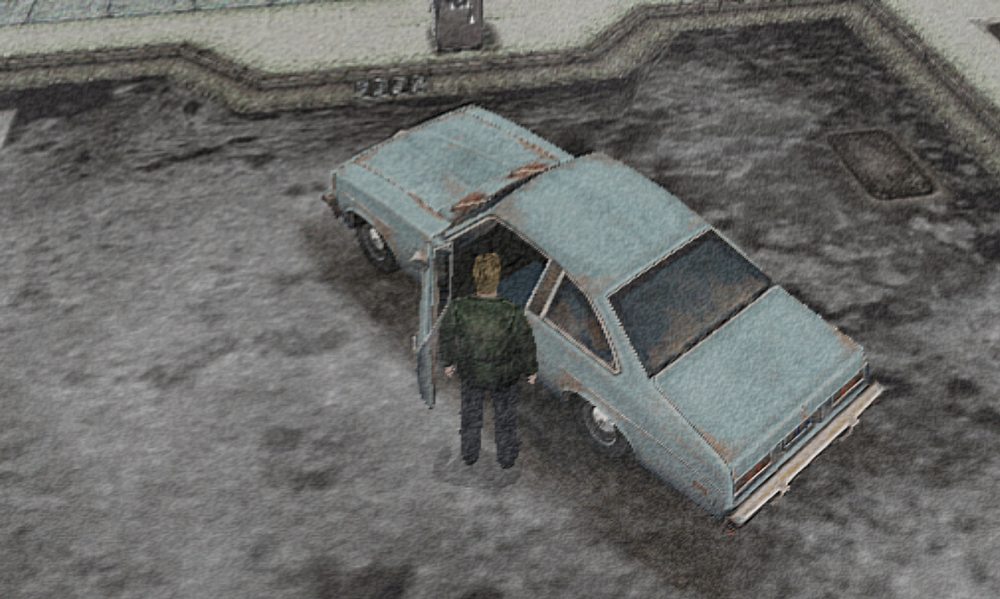
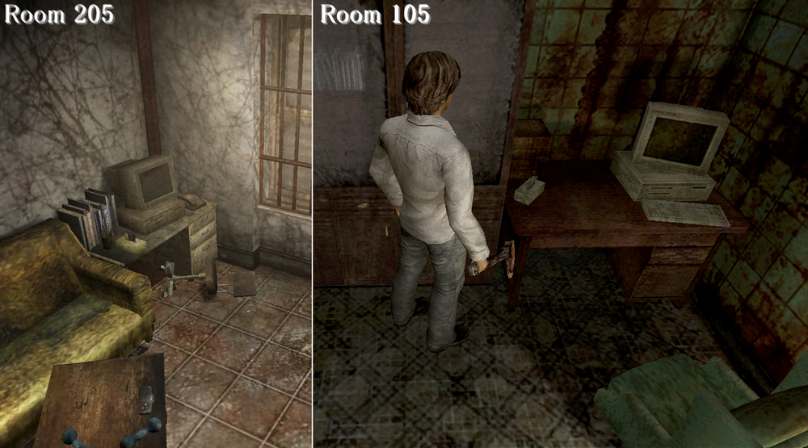
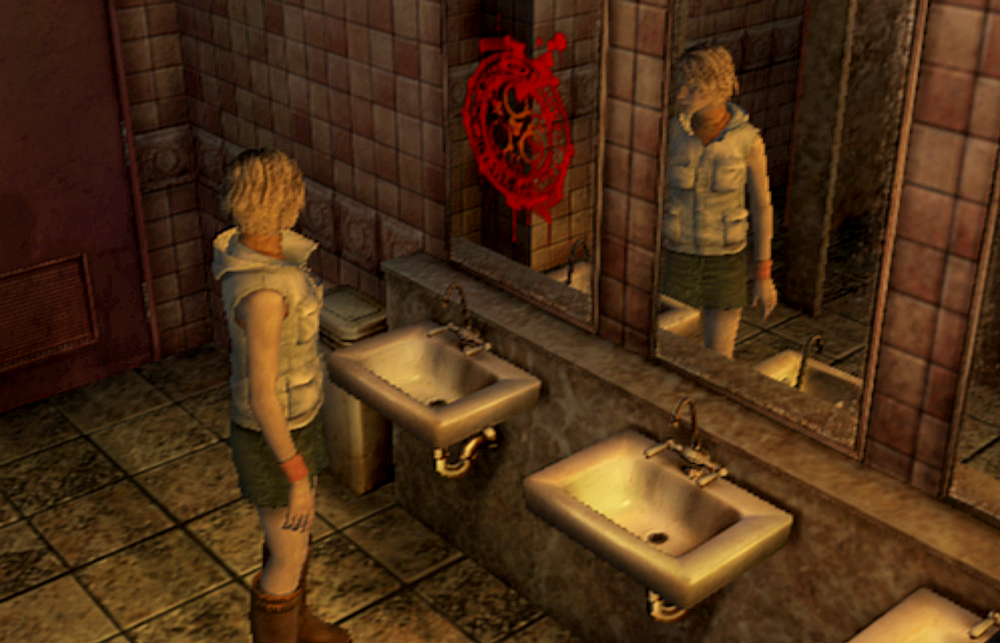
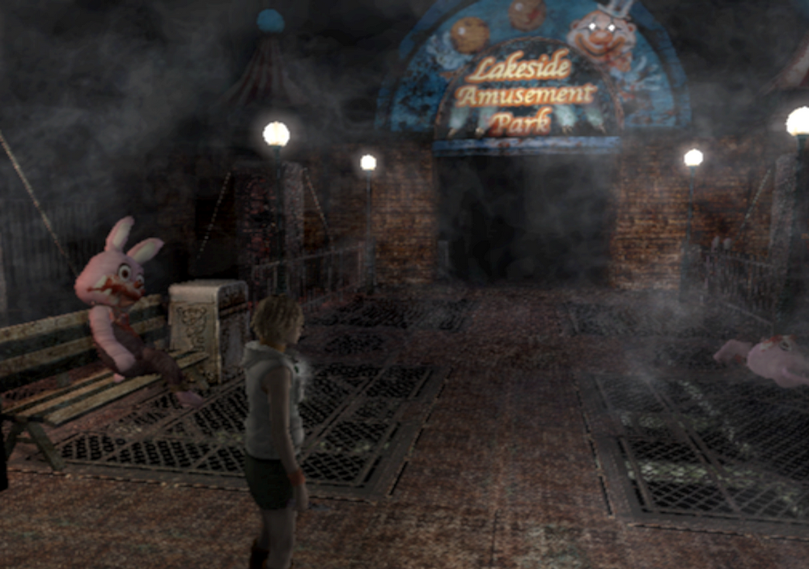
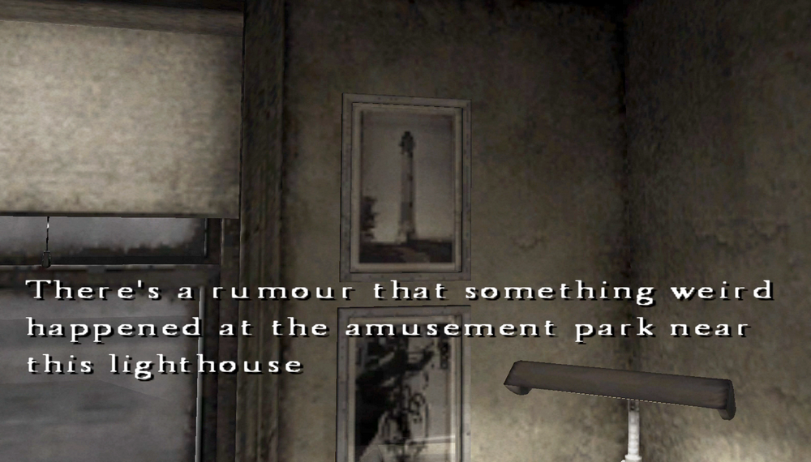
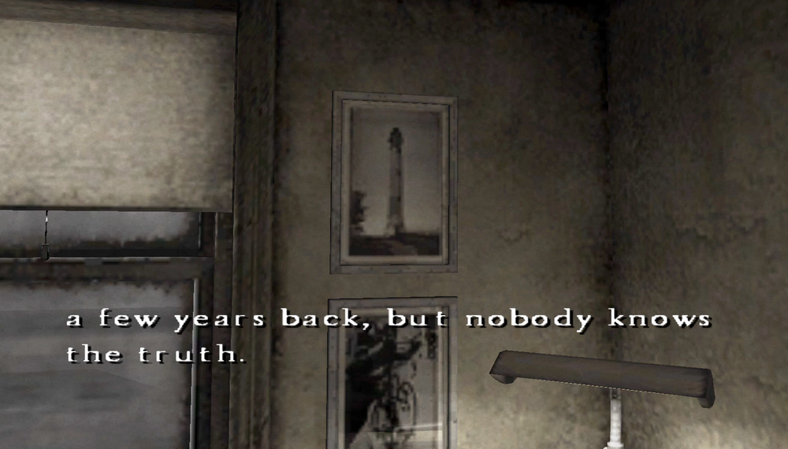

SH1 to SH4 Era and Timeline

Silent Hill 1 to Silent Hill 4 Era and Timeline
This is a mirror of the DeviantArt version linked above, provided as a backup and for easier access.

Many people have been analyzing the series' timeline and when each story takes place for a long time. What I'm sharing here is just a little bit of that.
✅ Deducing the Era from the Appliances and Fashion
Many fans have tried this, one way to guess the timeline is by checking in-universe ads, cars, and electronics.

SH2 seems to be set roughly around 1990 based on the cars. Judging by the appliances and the PC, SH4 looks like it takes place in the early 2000s, which fits since it's said to happen 10 years after SH2. And that pretty much matches the release year.

Well, that part is just something I picked up from people before me, but the PCs in SH4 really do look like old Windows machines.

From a fashion standpoint, the male protagonists in this series wear dress shoes. If you look at American TV shows from around the 1980s to 2000s, jeans + dress shoes were also common back then, so it might just have been the fashion of the era. These days it’d be sneakers, right?
And Heather's short-layered outfit was also a typical, puzzling early 2000s fashion!
✅ Deducing the Timeline from the SH4 Official Guide Book
Pages 162-163 of the SH4 Complete Guide book show a series timeline based on Walter's chronology.
SH1 - Walter was 18 years old
SH2 - Walter was 24 years old / death
SH3 - 3-7 years after Walter's death (he'd be 27-31)
SH4 - 10 years after Walter's death (34 years old)
So, SH2 happens 6 years after SH1, SH3 happens 3-7 years after SH2, and SH4 happens 10 years after SH2. It also fits with the stories.
The problem is, with this timeline, Heather's age doesn't add up, she'd be between 9 and 13. That makes SH1 and SH3 a bit iffy.

Henry says while looking at photos, "There's a rumor that something weird happened at the amusement park near this lighthouse a few years back, but nobody knows the truth." which matches SH3 being a few years before SH4.


So, if SH1 is moved to an earlier event, specifically, not 6 years but an event occurring roughly 10 to 14 years before SH2, the entire timeline could line up.
And combining the two theories is probably the closest to the correct answer.
✅ There are also different theories, like the theory going backward from Homecoming's calendar, or Origins, and also the one Ito-san mentioned. I ran out of energy, so I'll skip it…